Unified multimodal input
Images, video frames, instructions, and available state or history are encoded into one shared token sequence.

through Agentic Data–Model Co-Evolution
One model to understand the scene, organize actions, and ground interaction targets.
One 9B model. Leading across perception, planning, and execution.
We introduce ABot Embodied Reasoning (ABot-ER), a unified embodied reasoning foundation model that breaks the tension between breadth and depth in embodied reasoning. Embodied intelligence demands the joint mastery of perception, planning, and execution, yet reconciling generality with specialization across this spectrum remains an open challenge.
Within a single unified model, ABot-ER commands specialist-level depth across all three competencies, spanning spatial, scene, and temporal reasoning in perception; long-horizon action organization in planning; and point grounding and affordance in execution. The Agentic Data-Model Self-Evolution Engine continuously adapts data strategies to the model’s evolving capability state.
The Task-Conditioned Adaptive Training Strategy uses task tokens to activate lightweight low-rank residuals over a shared backbone, separating updates from heterogeneous output formats while retaining shared embodied knowledge. Across a systematic evaluation on twelve benchmarks covering three core competencies and five capability dimensions, ABot-ER achieves state-of-the-art overall performance across perception, planning, and execution within a unified parametric framework, demonstrating that breadth and depth can coexist in unified embodied reasoning.
A reasoning interface between what a robot observes and what it does next.
ABot-ER brings perception, planning, and execution-oriented grounding into a shared vision-language model. Its agentic data engine revises supervision content, output protocols, and training mixtures in response to diagnosed capability gaps.
Task-conditioned low-rank residuals provide dedicated adaptation paths while the backbone continues to learn shared embodied knowledge. The released recipe uses one joint pre-training stage followed by one targeted post-training stage.
ABot-ER predicts assessments, plans, and interaction coordinates—not motor commands. An agent runtime and downstream action policies handle physical execution.
Spatial relations · Scene states · Temporal events
Ordered, long-horizon action plans
Points and affordances for interaction
A single autoregressive backbone, with lightweight residuals selected once per sequence.
[EQA] in the figure denotes the question-answering route; the implementation uses [2D_QA]. Task planning uses [TASK_PLAN].Images, video frames, instructions, and available state or history are encoded into one shared token sequence.
Question answering and task planning select different residual factors. The route stays fixed during decoding; the language backbone remains shared and trainable.
For 9B: rank and α both 16, on Q/V projections at zero-indexed layers 19, 23, 27, and 31. Vision encoder frozen; connector, decoder, and residuals trained together.
Improve what is taught, how it is expressed, and how often it is seen—not just the number of training steps.
Repair missing or contradictory targets, anchor point labels to target regions, and retain verified multi-step planning supervision.
One normalized coordinate convention, with task-specific serialization. Freeze prompts and parsers before comparing checkpoints.
Reallocate exposure to diagnosed deficits while retaining replay. Track physical records and supervision tokens as distinct budgets.
104,960 records in the released training mixture.
Shares by physical records. Planning contributes 63.76% of assistant supervision tokens, because structured plans are longer.
Shared 9B settings: global batch 128 · BF16 · 8,192 tokens · ZeRO-3 · 32 GPUs. Optimizer and scheduler reset between stages. Source: Tables 16–18.
The released ABot-ER 9B model leads the three competency means among the nine baselines listed in Table 8.
+3.94 vs. strongest listed baseline
+4.20 vs. strongest listed baseline
+11.81 vs. strongest listed baseline
| Benchmark | ABot-ER 9B | Strongest listed baseline | Baseline score | Δ |
|---|
Bold blue values exceed the strongest baseline in Table 8. Scores are percentages / points as reported; benchmark metrics differ. EQA (9): 64.57. Planning (3): 41.61. These are report aggregates, not a live leaderboard.
Comparisons use the report's listed baselines and frozen snapshots, not every public model. Point-hit rates are not physical manipulation success. The audited VABench predictions repeat one location eight times and are not eight independent predictions. The report does not infer native feedback correction from the EB archives. See Sections 6.1–6.2 for full protocol and provenance caveats.
Dense models from 2B to 27B, plus a 35B MoE model with 3B active parameters. No size-specific rerun of the data-evolution loop.
| Model size | EQA (9) | Planning (3) | Perception (7) | Execution (2) |
|---|---|---|---|---|
| 2B | 55.20 | 34.14 | 55.79 | 53.13 |
| 4B | 61.80 | 41.69 | 61.19 | 63.90 |
| 9B MAIN | 64.57 | 41.61 | 63.86 | 67.06 |
| 27B | 66.23 | 51.59 | 65.64 | 68.29 |
| 35B-A3B MoE | 65.39 | 46.48 | 65.04 | 66.62 |
| Model | Weight size | ModelScope |
|---|---|---|
| ABot-ER-2B | 4.45 GB | View model |
| ABot-ER-4B | 9.10 GB | View model |
| ABot-ER-9B | 18.84 GB | View model |
| ABot-ER-27B | 54.74 GB | View model |
| ABot-ER-35B-A3B | 70.25 GB | View model |
Released models for embodied QA and task planning. Load each model with its matching task-conditioned configuration, tokenizer, and processor.
Real-world demonstrations on Galaxea R1 Pro, completing tasks in collaboration with ABot-AgentOS and ABot-M.
Recognize dot-coded numbers, interpret operand order, validate an expression, and locate grasp and placement targets.
Supply visual state information for the agent runtime to coordinate decisions and subsequent actions.
@misc{ding2026aboterunifiedembodiedreasoning,
title={ABot-ER: Unified Embodied Reasoning through Agentic Data-Model Co-Evolution},
author={Qiuyu Ding and Heng-Da Xu and Changda Xia and Jiajun Shen and Zihao Guan and Zhengchen Yuan and Jianfang Zhang and Di Yang and Jiayi Tian and Yuting Xu and Fei Wang and Shiao Liu and Wei Zhang and Xiaolong Wu and Wenbin Tang and Zedong Chu and Mu Xu},
year={2026},
eprint={2610.18355},
archivePrefix={arXiv},
primaryClass={cs.AI},
url={https://arxiv.org/abs/2610.18355},
}Zedong Chu
Mu Xu / Wenbin Tang